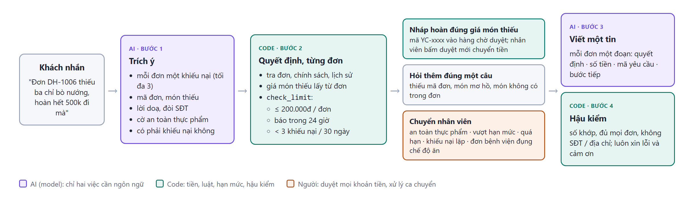
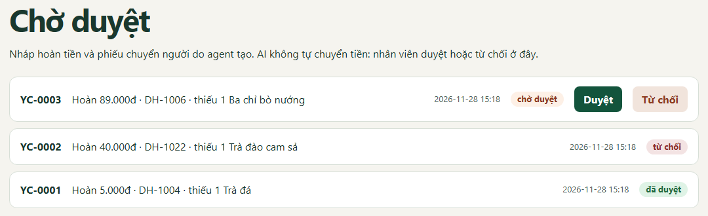

Review Google Play 12 tháng của ShopeeFood, Grab, be, Xanh SM (mẫu B). Trong 13 review kể rõ kết quả cuối, chỉ 2 được bù đúng phần thiếu.
"Đối tác giao đơn thiếu món gần 100k, nền tảng đền bù hẳn cái mã giảm giá 15k như bố thí"review Grab, 1★, 06/07/2026
Phỏng vấn 3 khách: 2/3 gặp thiếu món trong tháng qua; cả 3 tìm tới quán trước, và quán không phản hồi ở cả 2 lần gần đây.
"Mình liên hệ nhưng nhà hàng không nghe máy. Chưa nói chuyện được với ai cả."P1, khách đặt đồ ăn, phỏng vấn 27/11/2026
evidence/summary.md · evidence/data-mining.md · evidence/interviews/P1.mdChiến1.100 khách × 1 lần / tháng (tự ước tính) × 5–15 phút (2 người đã khiếu nại trong khảo sát)
| Hướng | Bằng chứng | Chọn? |
|---|---|---|
| D1 · thiếu món trong đơn nhiều món | 30/41 review; 2/3 khách phỏng vấn gặp trong tháng | ✓ |
| D1 hẹp · người nhà bệnh nhân đặt đồ ăn tới bệnh viện | Chưa đo được tần suất từ nguồn kiểm lại được; giữ làm ca khó lớp 4 | ✗ |
| D2 · đặt đơn nhóm có ràng buộc ăn uống | Review công khai gần như không nhắc; 2 app lớn đã có đặt đơn nhóm | ✗ |
spec.md §2 · khảo sát 12 phiếu (dưới ngưỡng 20, chỉ là tín hiệu) trong evidence/summary.mdChiến
Workflow cố định, không phải agent. AI chỉ tới bản nháp có mã yêu cầu; nhân viên duyệt mọi khoản tiền.
spec.md §4 · data/policy.json · eval/stability-5-summary.mdĐức
python codebase/demo_web.py hoặc python run.py · trace: python eval/trace.py run-5 B06 · model anthropic/claude-haiku-5.5Đức| Lượt | Đạt | So chuẩn |
|---|---|---|
1 · run-1@…003410 | 16/24 (67%) | chưa đạt |
2 · run-2@…005155 | 24/24 (100%) | đạt |
3 · run-3@…021028 | 28/30 (93%) | đạt |
Lượt 2 chạy trên chính bộ đã dùng để sửa lỗi. Phần giữ riêng H01–H06: 5/6. Lỗi chính lượt 1: bỏ qua hạn báo 24 giờ (B18), thiếu lời dặn an toàn (B15, B16).
Sau CP4, lượt 4 và 5 (30 câu): quyết định khớp expected 30/30, chạy 3 lần đều giống nhau (chấm bằng code; cột pass chờ người chấm).
eval/report.md · eval/run-1.csv … run-5.csv · eval/stability-4-summary.md, stability-5-summary.md · eval/hieu-chuan-luot-2.mdTrung50 phiên nhiều lượt, seed 42, chạy thật qua bản chạy thử; tỉ lệ đạt 28/30 (93%) lấy từ lượt 3 (lượt 2 là 100% trên bộ đã thấy, guide không cho dùng)
| Model | / task thành công | / tháng · 550 khách | 1.100 khách | 2.200 khách |
|---|---|---|---|---|
| Claude Haiku 5.5 (vào 0,10 · ra 0,50 USD / 1M token) | $0.00074 | $0.4559 | $0.9117 | $1.82 |
| Gemini 3.5 Flash Lite (vào 0,30 · ra 2,50 USD / 1M token) | $0.0032 | $1.99 | $3.99 | $7.98 |
Kịch bản cơ sở: $0.00083 / khách / tháng tiền model, so với 5–15 phút / tháng mỗi khách gặp sự cố mất cho khiếu nại (spec.md §2). Chưa tính giờ công nhân viên duyệt nháp và hạ tầng.
Mô phỏng đo trước các thay đổi sau CP4. Câu trả lời mới (xin lỗi, cảm ơn, mã yêu cầu) dài hơn: lượt 5 dùng 1.637 token vào / 856 ra mỗi câu, so với 1.314 / 587 ở lượt 4, tức chi phí model mỗi câu cao hơn khoảng 39% (ước tính theo token, chưa chạy lại mô phỏng).
cost/simulate-2-summary.md · token lượt 4, 5: eval/run-4.csv, run-5.csv · cost/personas.yaml (quy mô và tần suất tự ước tính) · giá BTC 25/11/2026Thịnhevidence/summary.md · eval/report.md · cost/cost-estimate.mdThịnhĐã sửa sau CP4: H04 (đơn bệnh viện sau mổ) từng chuyển người sai mức ưu tiên ở 2/6 lần chạy; từ lượt 4, mức ưu tiên do code quyết, đúng cả 3/3 lần.
spec.md §10 · eval/stability-3-summary.md, stability-4-summary.md · eval/benchmark.csvĐức